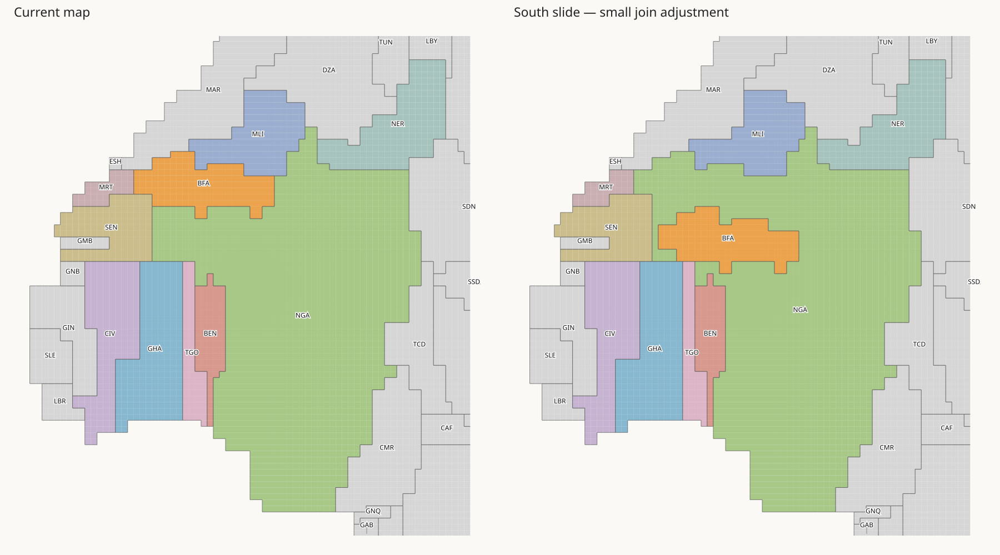
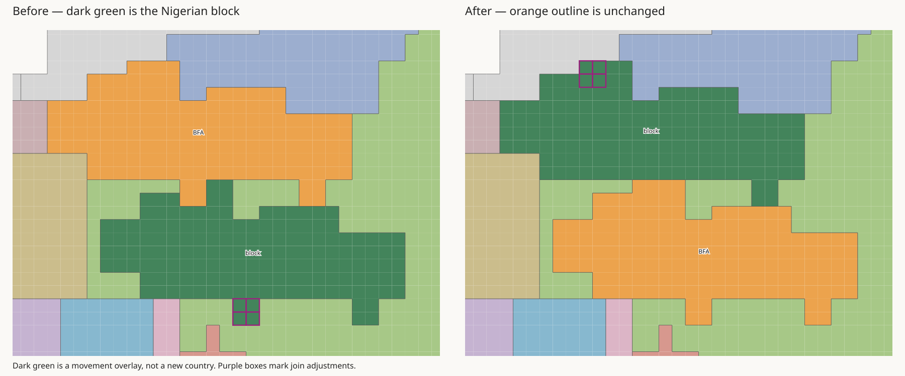
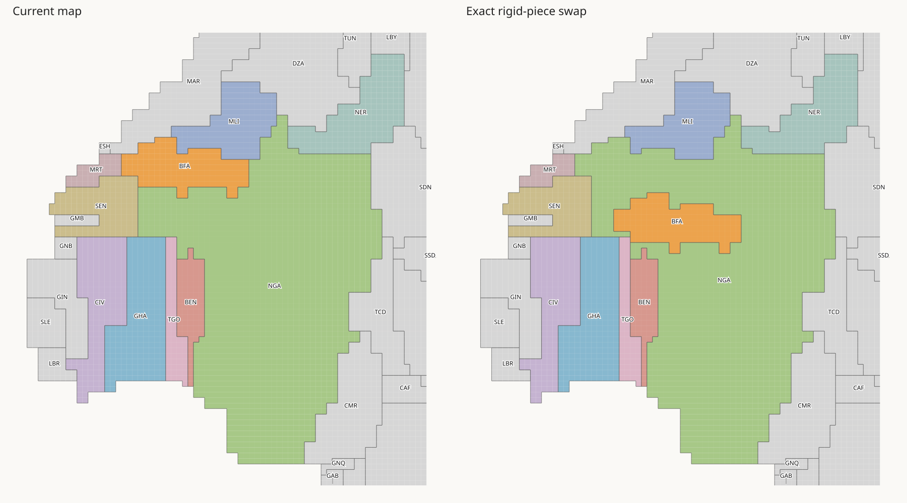
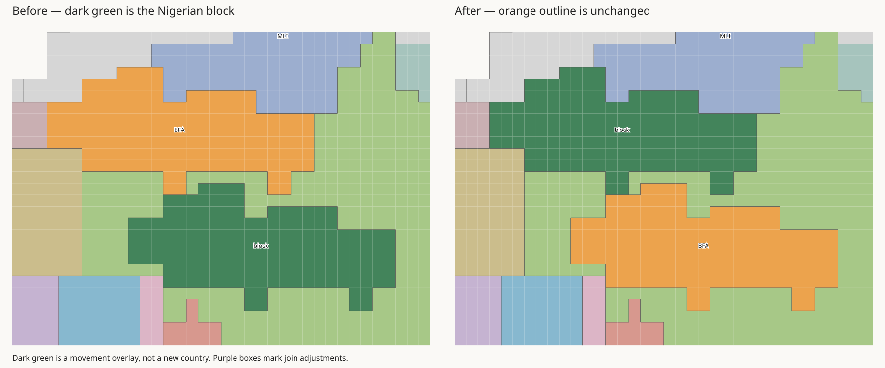

This trial moves existing pieces. It does not repartition West Africa. Burkina Faso keeps its exact outline, orientation, and 159 tiles. Nigeria keeps 1562 tiles. Every other country stays in exactly the same place. The combined land mask stays unchanged: there are no new gaps, holes, or water tiles.
The current map and H3-MON exports have not changed. These are two-country movement trials, not complete geographic fixes. The selected Nigerian block comes from the western arm; the rest of Nigeria stays fixed. This does not move the entire arm as a predefined piece. A purely southward move is blocked with all other countries fixed, so both candidates also move Burkina Faso a short distance east.
Small join adjustment · Two rigid pieces · Trial world map · Checks and input hashes · Searched placements
Burkina Faso moves 4 tiles east and 9 tiles south. 151 of 155 Nigerian block tiles move together 4 tiles west and 9 tiles north. 4 Nigerian tiles need a join adjustment. The other 1407 Nigerian tiles do not move.


Burkina Faso's neighbours after this move: GHA, NGA, TGO. No neighbour graph was enforced.
Burkina Faso moves 7 tiles east and 10 tiles south. 159 of 159 Nigerian block tiles move together 7 tiles west and 10 tiles north. 0 Nigerian tiles need a join adjustment. The other 1403 Nigerian tiles do not move.


Burkina Faso's neighbours after this move: NGA, TGO. No neighbour graph was enforced.